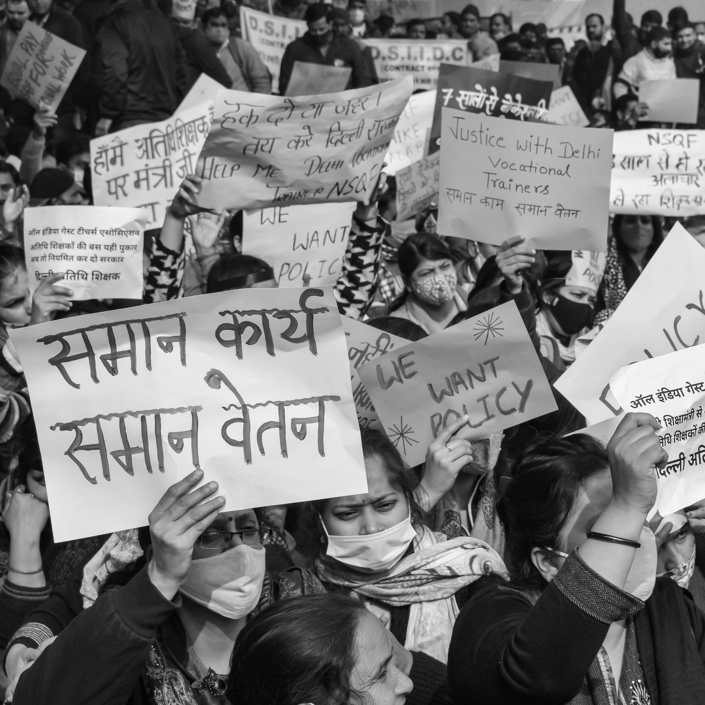
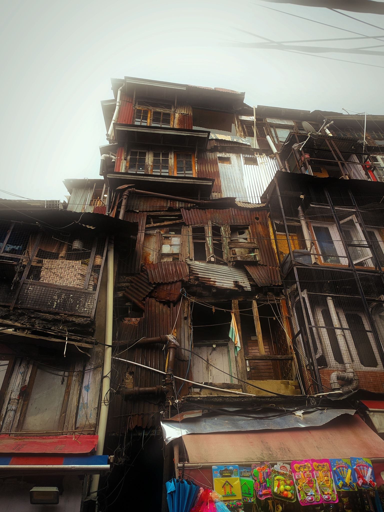
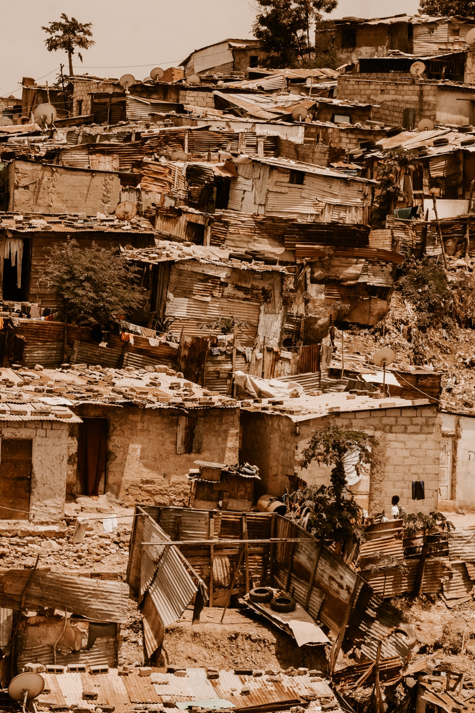
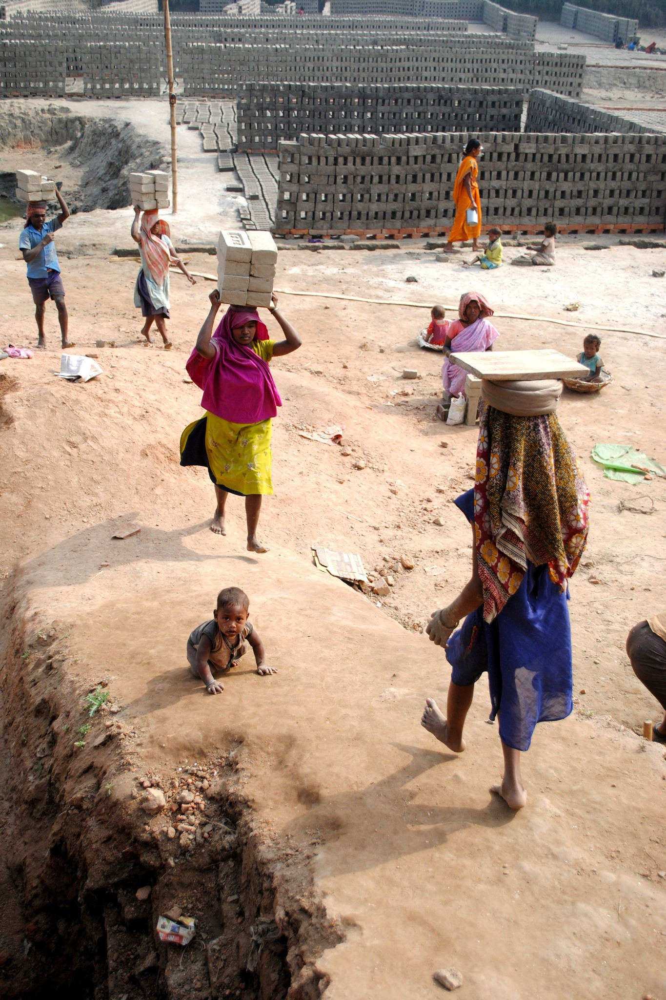
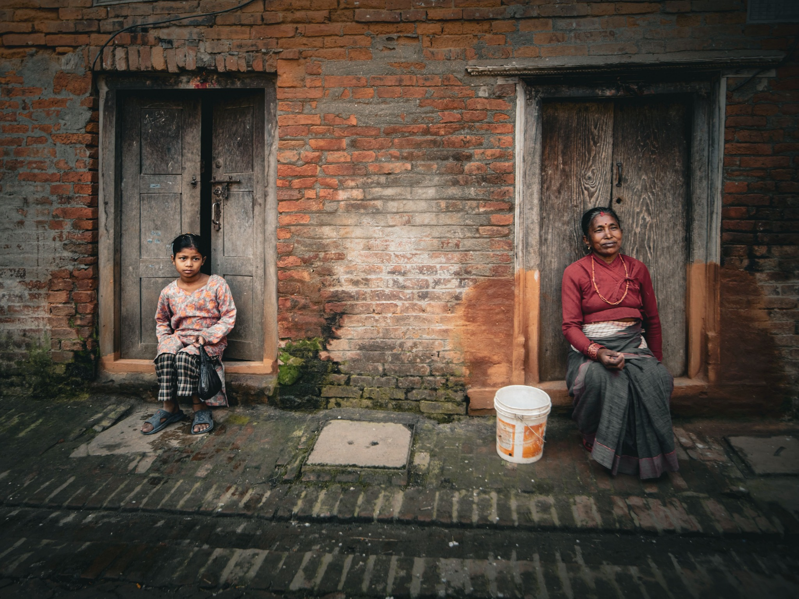
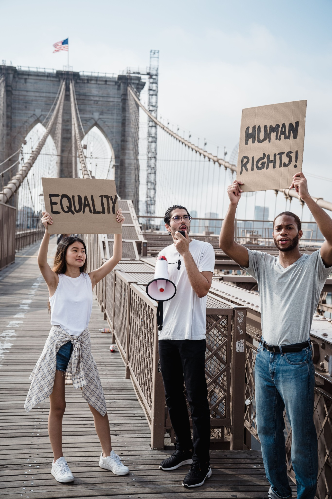

PUBLIC HEALTH · ACCESS
The distance between illness and care
What shapes a person's ability to reach safe, timely and affordable healthcare?
Explore story ↗VISUAL STORYTELLING · GLOBAL AFFAIRS · HUMAN DIGNITY
I am Naveen Raju, a journalism graduate interested in the forces shaping everyday life — from public health and inequality to humanitarian action and accountable governance.
Explore the stories ↘Behind every statistic is a human experience. Behind many individual struggles are systems, policies and decisions worth examining. This portfolio brings together visual storytelling, journalism, research and reflections on how institutions can serve people better.
This is an evolving editorial portfolio. The photographs currently provide visual context for the themes explored. Original field photographs and interview-based material will be added following appropriate ethical approval, informed consent and safeguarding review.
Choose a theme to explore story concepts, reporting questions, interview prompts and evidence needs.
PUBLIC HEALTH · ACCESS
What shapes a person's ability to reach safe, timely and affordable healthcare?
Explore story ↗EDUCATION · OPPORTUNITY
How access to learning can influence a person's choices and future.
Explore story ↗SANITATION · DIGNITY
Water, sanitation and public services shape daily life and health.
Explore story ↗GOVERNANCE · ACCOUNTABILITY
What gets lost when organisations cannot coordinate around people's needs?
Explore story ↗HEALTH · SOCIAL CONDITIONS
How education, stress, income and support influence health behaviour.
Explore story ↗HUMANITARIAN ACTION · DIGNITY
How can humanitarian reporting centre people's dignity, safety and agency?
Explore story ↗Browse visual collections on civic action, housing inequality, essential services, labour and community wellbeing. Images are used for context; future original field material will be added only after appropriate ethical approval and informed consent.






Ethical practice: captions do not claim that these images document Naveen’s own reporting. Any future field photographs or interviews will be undertaken with appropriate permission, informed consent and safeguards for participants.
Naveen's undergraduate project examined the impact of artificial intelligence on journalism, with attention to trust, misinformation and ethics. It used a structured questionnaire with 50 respondents, convenience sampling, secondary research and descriptive analysis.
Confirm all details and any findings against the original academic project before publication.
Read research overview ↗With a background in journalism and interests spanning governance, risk, technology and humanitarian questions, Naveen is building a practice focused on listening carefully, examining systems and communicating complex issues with clarity.
Expand any reference to voluntary humanitarian involvement only after confirming role, dates, responsibilities and permissions to share. Do not imply endorsement by an organisation.
For editorial collaborations, interviews, research conversations or project enquiries.
Contact Naveen ↗